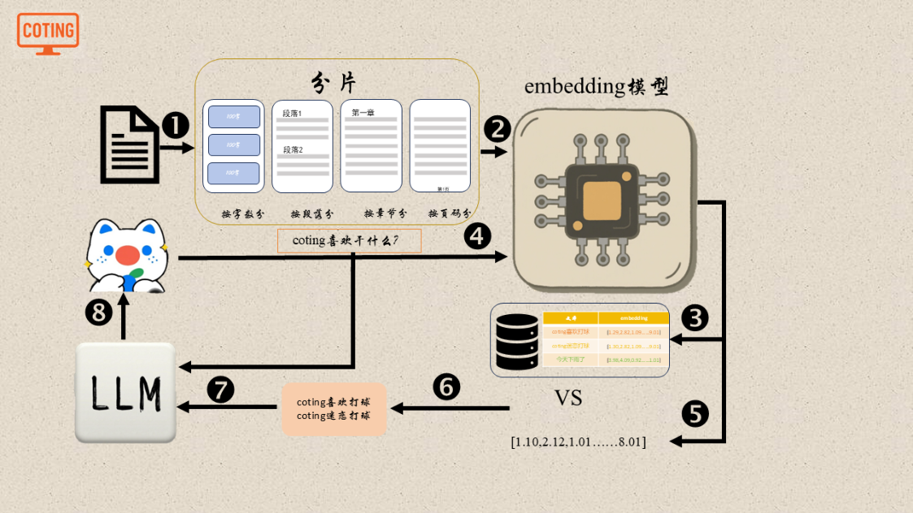
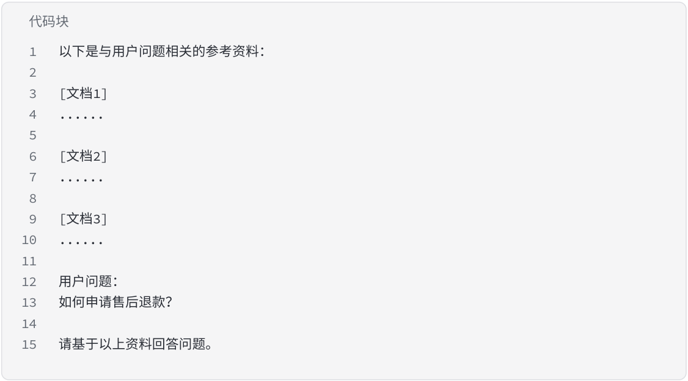

RAG 架构
在理解了 RAG 的基本概念之后，下一步需要关注的是 RAG 系统在工程上的整体架构。RAG 并不是一个单一的模型，而是一套由多个模块组成的系统流程。在实际应用中，一个完整的 RAG 系统通常包含查询处理、向量检索、上下文构建以及大模型生成等多个阶段，这些阶段共同构成了一个典型的 RAG Pipeline。

从整体流程来看，RAG 的基本架构可以表示为：
User Query
↓
Query Embedding
↓
Vector Retrieval
↓
Context Construction
↓
LLM Generation
在这个流程中，每一个环节都承担着不同的职责，并且都会直接影响最终生成结果的质量。理解这些模块的工作方式，是设计高质量 RAG 系统的关键。
User Query
RAG 系统的入口是用户提出的问题，也就是 User Query。在实际应用中，这个问题可以来自多种来源，例如聊天机器人中的用户提问、企业内部知识库的搜索请求，或者是智能客服系统中的问题描述。
用户输入通常是自然语言形式，但在进入检索阶段之前，系统往往会进行一定的预处理，例如：
-
去除无意义字符
-
统一文本格式
-
进行简单的语义重写
-
识别用户意图
在一些复杂系统中，还会在这一阶段加入 Query Rewrite（查询重写） 或 Query Expansion（查询扩展） 等技术，以提高后续检索阶段的召回率。
Query Embedding
在完成用户输入的预处理之后，系统需要将文本转换为可以进行语义检索的向量表示，这一步被称为 Query Embedding。
Embedding 的核心思想是将文本映射到一个高维向量空间中，使得语义相似的文本在向量空间中的距离更接近。例如，“如何申请退款”和“退款流程是什么”在语义上非常接近，因此在向量空间中它们的距离也会比较小。
这一阶段通常会使用专门的 Embedding 模型，例如：
-
OpenAI Embedding
-
BGE 系列模型
-
E5 Embedding
-
Sentence Transformers
通过这些模型，用户的查询可以被转换为一个数百维甚至上千维的向量表示。这个向量将被用于后续的相似度检索。
Vector Retrieval
在获得查询向量之后，系统会进入 Vector Retrieval（向量检索） 阶段。在这一阶段，系统会在向量数据库中搜索与查询向量最相似的文档向量，并返回最相关的若干条结果。通常情况下，系统会返回 Top-K 个最相关的文档片段，例如 Top-3、Top-5 或 Top-10。向量检索的核心是计算向量之间的相似度，常见的相似度计算方式包括：
-
Cosine Similarity（余弦相似度）
-
Inner Product（内积）
-
Euclidean Distance（欧氏距离）
为了在大规模数据中实现高效检索，向量数据库通常会采用近似最近邻搜索（ANN）算法，例如 HNSW 或 IVF 等索引结构。通过这些算法，即使在包含数百万甚至数亿条向量的数据库中，也可以在极短时间内完成相似度搜索。
在实际工程中，这一阶段通常由向量数据库系统负责，例如 Milvus、Pinecone、Weaviate 或 FAISS。
Context Construction
当系统获得检索结果之后，并不会直接将这些内容原封不动地输入给大模型，而是需要进行 Context Construction（上下文构建）。
这一阶段的目标是将检索到的文档片段整理成适合大模型理解的上下文信息。由于大语言模型存在 Context Window（上下文长度限制），系统必须合理选择和组织检索结果，以避免输入内容过长或信息冗余。
常见的上下文构建策略包括：
-
按相似度排序选择最相关内容
-
去除重复或高度相似的文档片段
-
拼接多个文档块形成统一上下文
-
添加引用信息或来源标记
例如，在一个企业知识库问答系统中，最终输入给大模型的 Prompt 可能会被构造成如下结构：

通过这种方式，大模型在生成答案时可以直接参考真实文档内容，而不是完全依赖自身训练知识。
LLM Generation
RAG Pipeline 的最后一步是 LLM Generation（大模型生成）。在这一阶段，系统会将用户问题 + 构建好的上下文一起输入到大语言模型中。模型会根据提供的上下文信息进行推理，并生成最终的回答。
由于模型已经获得了相关资料，因此生成的回答通常具有以下特点： 首先，答案更具事实依据，因为模型可以直接引用检索到的文档内容。其次，回答的准确率更高，幻觉问题显著减少。最后，系统可以提供可追溯的信息来源，例如引用原始文档片段。
在一些高级 RAG 系统中，这一阶段还可能包含额外步骤，例如：
-
Rerank（对检索结果进行重排序）
-
Citation Generation（自动生成引用）
-
Answer Verification（答案校验）
这些机制可以进一步提高系统的稳定性和可信度。
RAG Pipeline 的整体理解
综合来看，一个完整的 RAG 系统实际上是由检索系统与生成模型协同工作构成的：
-
检索系统负责找到最相关的知识
-
生成模型负责理解信息并组织语言
这种架构使得大模型能够突破训练数据的限制，动态访问外部知识库，从而构建真正可用的 AI 应用系统。
在实际工程实践中，RAG Pipeline 还会不断进行优化，例如增加查询重写、多路检索、混合搜索以及结果重排序等机制，这些内容将在后续章节中继续深入介绍。